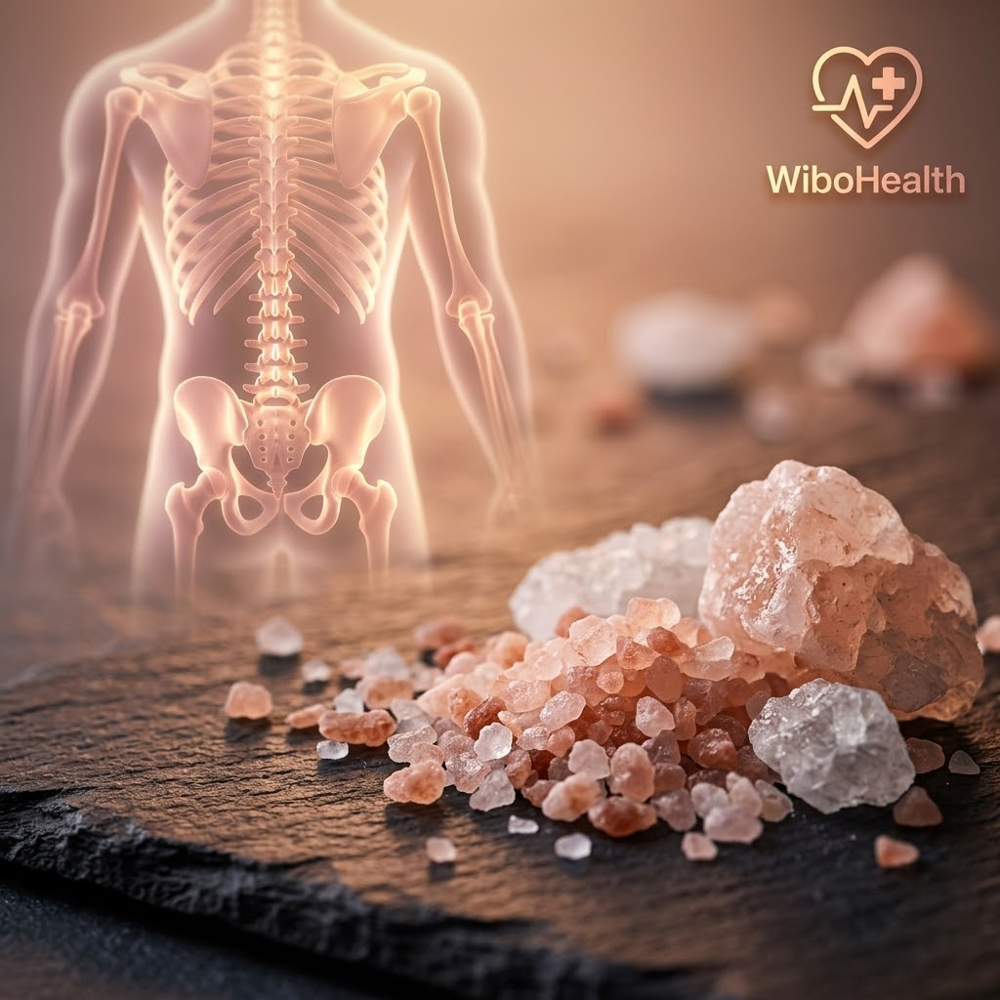
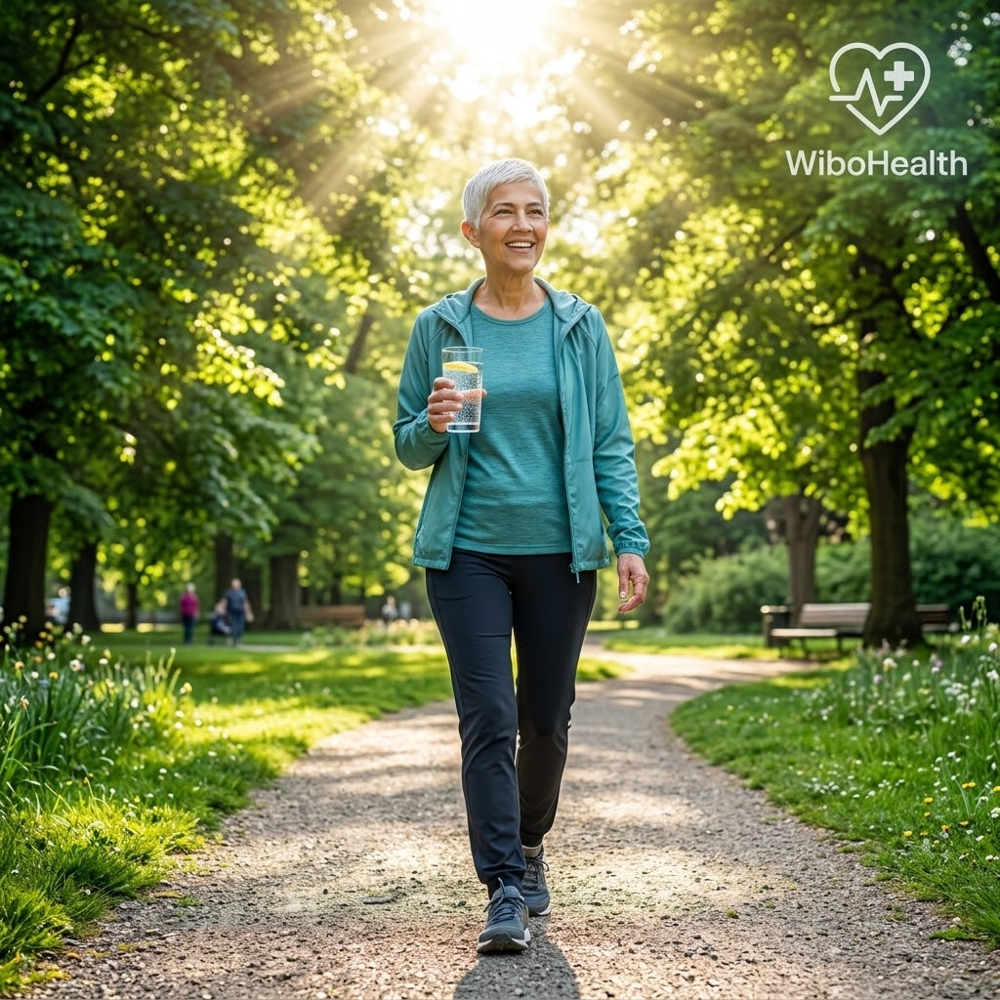

وجع بالركب.. طقطقة بالفقرات.. ألم بأسفل الضهر ما بخليك تنام.. وفوق هاد كلو، شبح التقدم بالعمر والخوف من شي اسمو "هشاشة عظام"! شو أول شي بيخطر ببال أي واحد فينا لما يحس بهالوجع؟ فورا: «يالله يا جماعة، ركض عالصيدلية جيبولنا كالسيوم، وجيبولنا سطل لبن وقنينة حليب، ومنبلش نبلع وناكل ونهتم بالكالسيوم وبس!».
بس لحظة.. استنوا شوي وفرملوا معي على مهلكن! تعوا لأصدمكن بأول قنبلة بهالمقال: عضامنا مو مصنوعة من الكالسيوم لحاله نهائياً! إذا مفكر عظامك عبارة عن لوح طبشور كلسي أبيض، فأنت عايش بأكبر كذبة طبية تسويقية انزرعت براسنا من سنين. العظام نسيج حي، معقد، وذكي جداً، وبيتكون من ٦٤ معدن نادر بالإضافة لـ ١٢ معدن أساسي لا يمكن تبني ذرة عظم بدونهن!

المعادن الـ 64 النادرة في ملح الهملايا والصخور البحرية: سر الكثافة العظمية الحقيقية بعيداً عن كذبة الكالسيوم المنفردأسطورة التقدم بالعمر وهشاشة العظام:
شايفين هي الجملة الشهيرة: «كبرنا بالعمر والعظام لازم تضعف وتنهد»؟ لما حدا يقول قدامكن هالجملة، أعطوه كف بقفا إيدكن فوراً! هههههه لأنه مافي أي ترابط فيزيولوجي حتمي بين التقدم بالعمر وبين وهن العظام. العظام بتتجدد مدى الحياة، لكنها بتنهار لما تنقص وتجف المعادن الحيوية من دمنا وجسمنا!
أهم 12 معدن أساسي لبناء وتماسك عظامك
لما نهتم بالكالسيوم لحاله ونهمل هالمعادن، على عظامنا السلام! إليك كتيبة البناء الحقيقية:
السيليكا هي اللي بتعطي العظم مرونته المطاطية ليمتص الصدمات وما ينكسر من أول عثرة. والبورون هو المهندس اللي بيتحكم بحركة الكالسيوم والمغنيسيوم داخل شبكة العظم.
المغنيسيوم هو التوأم الأساسي؛ بدونه يتحول الكالسيوم لحصى كلى وتكلس شرايين! والبوتاسيوم يعادل حموضة الدم ليمنع الجسم من سحب الكالسيوم من عظامك لمعادلة الدم.
الكبريت والمنغنيز والزنك هنن الإنزيمات المسؤولة عن نسج شبكة الكولاجين وغضاريف الفقرات القطنية والركب، وهي القاعدة اللي بيركب عليها الكلس والمعادن.
سر مياه البحر وملح الهملايا: بلوعة مكملات ولا أسرار الخالق؟
أكيد عم تسألوا حالكن: «طيب يا دكتور، معقول نروح نشتري 64 علبة مكملات ونبلش بلوعة حبوب ليل نهار؟؟». طبعاً لأ وألف لأ! لا محفظتك رح تتحمل ولا كليتك وكبدك رح يسامحوك على بلع الكيماويات!
سبحان الخالق، الحل موجود بالطبيعة من ملايين السنين: بمياه البحر وصخور الملح الطبيعية! مياه البحر وصخور ملح الهملايا بتحتوي على كل المعادن النادرة الـ 64 اللي بيتكون منها هيكل الإنسان. وطبعاً: لا تشربوا من مية البحر مشان ما نتسمم! 😁 الحل هو تبديل الملح ببيتك:
- ملح البحر غير المكرر (Raw Sea Salt): ملح طالع من تبخير شمس طبيعي، 95% صوديوم و5% الباقية هي الذهب الخالص: معادن نادرة ويود طبيعي.
- ملح الهملايا الوردي (Himalayan Pink Salt): أنقى ملح صخري طبيعي انحفظ ملايين السنين، لونه الوردي جاي من وفرة الحديد والمغنيسيوم والبوتاسيوم والسيليكا الطبيعية.
- ارمو الملح التجاري المكرر بالزبالة: ملح المائدة الأبيض الرخيص مكرر على 600 درجة مئوية، ومضاف إله مبيضات ومانعات تكتل كيميائية، ومجرد من كل المعادن.. هاد هو اللي برفع الضغط وبيهد العظم!
فيتامين دال والدهون الحيوانية: كلوها وأنتو مرتاحين!
الشي التاني والمهم جداً هو فيتامين دال (Vitamin D). ضروري جداً خصوصاً بعد سن الأربعين والخمسين نداوم عليه بانتظام لحماية العظم من التآكل.
بس وين الفخ اللي واقع فيه 90% من الناس؟ إن فيتامين دال هو فيتامين ذائب بالدهون (Fat-Soluble)! يعني حبوب فيتامين دال إذا بلعتها مع كاسة مي أو بدون دهون صحية، جسمك ما رح يستفيد منها بنوب! وحتى الشمس ما بتصنع فيتامين دال إلا بوجود كولسترول ودهون صحية تحت جلدك.
وقصدي هون صريح وواضح: الدهون الحيوانية الطبيعية المفيدة جداً (سمنة بلدية، زبدة حيوانية، صفار البيض، دهن اللحم، شوربة الكوارع والعظام). رعبونا منها بالثمانينات وطلع أكبر وهم؛ الدهون الطبيعية ما بتسبب سمنة ولا بتعمل هشاشة.. كلوها مع وجباتكن وأنتو مرتاحين! 👍🏻

شمس الصباح، الدهون الصحية، والحركة اليومية: معادلتك الذهبية لفقرات قطنية مشدودة ومفاصل شابة مدى الحياةالحارس التالت المجهول: فيتامين K2 (شرطي مرور الكالسيوم!) 🚦
فيتامين دال بيسحب المعادن من الأمعاء وبيحطها بالدم.. عظيم، بس مين رح يوجهها للعظم ويمنعها تسد شرايين القلب والكلى؟ هاد دور فيتامين K2! بياخد الكالسيوم من مجرى الدم وبثبته جوا شبكة العظام والأسنان. وبتلاقوه بوفرة بالجبنة المعتقة القديمة وصفار البيض والزبدة البلدية الطبيعية.
أسئلة شائعة يجاوب عنها فريق ويبو هيلث
للأسف الحليب التجاري المبستر بيحتوي على كالسيوم معزول بدون توازن المغنيسيوم والسيليكا الكافي، والدول الأكثر استهلاكاً للحليب التجاري هي نفسها صاحبة أعلى معدلات كسور حوض! الأفضل الاعتماد على الورقيات الخضراء، بذور السمسم، شوربة العظام، والملح الصخري الطبيعي.
الملح المكرر هو المسبب الحقيقي لاحتباس السوائل وارتفاع الضغط لأنه صوديوم خام مجرد، بينما ملح الهملايا والبحري الطبيعي بيحتوي على بوتاسيوم ومغنيسيوم وكالسيوم طبيعي بيساعدوا الأوعية الدموية على التوازن، ولكن مع مراعاة الاعتدال الطبيعي دائماً.
المعلومات الواردة في هذا الدليل مقدمة للتثقيف الصحي والغذائي المبسط، ولا تغني عن الاستشارة السريرية المباشرة أو الفحوصات التشخيصية التي يحددها طبيبك المشرف بناءً على حالتك الفردية.